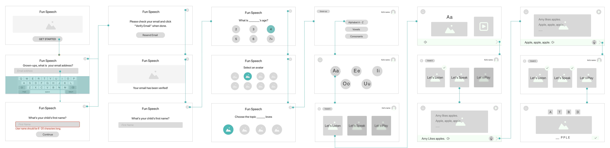

Kio is 4 years old and he has a difficult time learning the pronunciation of the letter "R"
Junqian liang
Product designer
Blooming: is the product to provide a joyful and engaging way for kids between 3–8 years old to effectively learn pronunciation and allows the parents to keep track of the learning progress.
My Role
I was the sole designer on this project. The methods used in the project included secondary research, persona, user flows, information architecture as well as the tools of Sketch, InVision, Miro, and Principle.
Problem
When the kids need to learn a language, pronouncing is a problem for some of them. It requires a huge effort to learn how to use the lips, tongue, teeth, jaws, and facial muscles, and parents will either wince or wonder when they do not have the appropriate knowledge or right tools to assist their kids.
Most of us believe that learning a language is natural and babies are born with the ability to learn it. That is true, but there are still some exceptions.
Design Process
Before starting with the project, I first define the UX process. Thus to clarify the steps that I will follow and the methods I will implement, which ensure to make the best use of it.
Understanding the pronunciation development
Articulation (pronunciation and talking) is the ability to physically move the tongue, lips, teeth, and jaw to produce sequences of speech sounds, which make up words and sentences. By conducting secondary research, I found out that 5% of the U.S. children age 3–7 have a speech disorder.
User Research
After attaining the insights of the relationship with the pronunciation and age development and the speech problems now exist in the U.S, I started to design questionnaires and filter the users for further interviews.
Persona
With the user interview results, I realized there are two types of users that I served:
1. The kid-users who are the main users while interacting with the product.
2. The parent-users who are decision-makers in choosing the app.
Therefore, I created two types of personas based on the characteristics of the overall users, to help me understand what his/her goals and needs are and their pain points.
Personas of kid-users and parent-users
Based on the findings from the discovery stage, I am ready to move ahead and start making design decisions and visualizing a solution. Firstly I used sketching to brainstorm the feature, and focusing on how might we:
I marked the top priority as "1" and the less important as 2 and 3.
User Stories
With all the identified functional needs, the next step is to set the priority. Thus I created the user stories for my project and prioritize which of these user stories should be included in the Minimum Viable Product (MVP).
My sketching to generate the ideas, it's not perfect, but super helpful
Using sketching to generate ideas
I then used sketching to brainstorm the solutions to solve the "how might we" questions. For each question, I came out with several possible ways.
Now the fun part begins. I started to create the paper sketches and use the tool of Marvel to conduct the guerilla usability test and it helps me to identify the issues before I dive into design the wireframe and prototyping.
Key takeaways from the testing:
The place of the buttons of “Next step” and “Play” should be consistent.
There should be a button for users to click to indicate that they have completed the task.
Wire flow
I created this set of mid-fidelity wire flows of all of the key screens in Sketch App to represent the screens that a user will interact with while using the product.

Style Guide
+ Brand personality: to create a smart buddy to accompany the child to study and the main tone will be yellow, which conveys a sense of energy and warmth.
The product’s logo is a hippo, as the stronghold for this product is by showing the movement inside the mouth to teach kids to pronounce and the hippo has a big mouth, so in the logo the double “oo” to represent the hippo.
+ Color palette: vibrant colors to provide a sense of modernity and smartness.
+ Typography: to use rounded, playful, sans serif typefaces.
+ Fun illustrations: to provide a warm and inviting feeling.
My solutions
Here are my high-fidelity mockups and let's take a closer look at what my solutions are:
Personalized the learning
Kids could choose the avatar they like and the topic they like in creating the account. For example, once they choose the subject of "Space", the following learning will be set in this context.
The avatars and topics can also be changed under the grown-up mode.
Engaging and joyful
The sounds are organized into 3 groups: Vowels, Consonants, and A-Z letters.
Well-designed learning path: Let's listen, let's speak, and let's play.
Guide character hippo is always available to assist the kid in the learning.
Kids could earn rewards and have their personal collections once they complete the learning sections.
My design of the guide character hippo
Keep track of the progress
With the verified code, parents could access the personal account. A learning report is available and it allows the parents to know their kids' learning progress. Parents could also listen to the recordings of their kids in studying the pronunciations.
Prototype
In order to better understand how the product satisfied the user's need, once the prototypes were deployed to Invision, I sent the links to the users (parent and kid) to get a feel of the actual app for quick user testing.
Feedback and Iteration
Most of the feedback from the first round of testing is positive, the users said the product is easy to use, the content is arranged logically and the interface is visually pleasing. Other than the positive feedback, there also some issues found in the testing, such as the button size. I changed the button size to make it fit for our users' little fingers.
Learnings
Empathy in Design Thinking
Creating a mobile app was a heavy project. This project allows me greatly to explore the design process and put myself into the users’ shoes and respect their feedback.
Design for the Kids
Designing an app for the kids is challenging. It requires the designer to know how to display clear and specific instructions while leveraging kids’ mental models and prior knowledge.
Design with less Ego
We all have our ego and we tend to prove the thing we believe true. The designer needs to know how to let go of our ego, make the decision purely based on the research finding.
Thank you for reading!
This case study is also published in UX Collective on Medium.